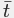
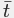

The Debugger is a powerful tool for checking your game,
and is especially useful for tracking down errors and bugs in your
code, as well as checking that scripts are run when they should be,
and that variables and arrays contain the values you expect etc...
You can start the Debugger by running your game from GameMaker
Studio 2 IDE using the Debug button  at the top of
the IDE, or by going to the Build
menu and selecting "Debug".
at the top of
the IDE, or by going to the Build
menu and selecting "Debug".
The actual Debugger window will look something like this:

At the top you have four drop down menus:
- File: Here you can attempt to reconnect the debug module to your game should the connection be lost, or exit the debug module (which will not exit your game, only the module).
- Window: This menu contains options for the various sub-windows that you can create for debugging. You can delete them (clear all of them so that you can create a new watch layout), or save the current layout or load a previously saved layout.
- Debug: From here you can pause or play the game being debugged, or you can toggle a breakpoint on or off.
- Help: Opens up your browser, taking you to this page in the manual.
Apart from these drop down menus, you also have a series of buttons along the top with which you can control certain aspects of your game and the Debug Modules interaction with it. These buttons are:

|
This starts the game again after it has been paused (keyboard shortcut f5). |

|
This will pause the game, if playing (keyboard
shortcut |
| Restarts the game. | |

|
Step into a code block or script (keyboard shortcut f11). |

|
Step over a code block or script (keyboard shortcut f10). |
| Step out of a code block or script (keyboard
shortcut |
|

|
Turn on or off real time updates for the debug information (this is off by default). |
The first three buttons are used to control your game, permitting you to start, pause or restart it at any time. When the game is paused, you can then use the next three buttons for "stepping" through your code. This simply means that you can tell your game to run the current line of code, then step onto the next one, permitting you to run through your entire game one line of code at a time should you wish. Normally you would simply use the Step In button to do this, but you also have one for stepping over code and one for stepping out of the code. Stepping over is useful when you have large scripts to run through, as clicking this will run the whole script or code block as a single step and stop on the next line afterwards, while stepping out will take you out of a script (they will run, but all at once) and stop on the next step afterwards when the scope changes. The final icon permits the debug window to update its data in real time, so you can see how variables change or instances are created and destroyed as it happens. Note that this may affect the games performance and that not all information is available in real time. For example, the Render State watch (see the section on Watches, below) cannot be viewed in real time.
Watches
The whole idea of the Debugger is to permit you to "watch" every
detail of your game. This is done using "watch windows" which are
opened in the main space on the right hand side of the debug
module. To open a new watch, simply click on an empty area (which
will show the text Select window type if no watch is
selected) or right-click  on the top window bar and choose a new
Type.
on the top window bar and choose a new
Type.
You can also split the main watch area into multiple windows using the "Split" option from the top window bar, permitting you to organise the layout to suit your needs (and these layouts can also be saved through the "Window" drop down menu). The type of window that you choose to open will depend on what it is that you wish to watch, with the following options available:
The Source window is where you can see the source code for your game, and you can have multiple tabs open in this window, with each tab showing the code from a different instance or event or script. If you do a right click
beside a line of code you can add a Breakpoint to the code (see below for more details on Breakpoints), and doing so again will remove it (you can also use the keyboard shortcut f9, or the toggle option from the Debug drop down menu. If you have this window open, you can also double click
on an event in any instance from the resource tree and its code will be shown in a new tab.
The Locals window shows the current step properties, which includes the name of the current event (or script) being run, the position within the event (the acronym "PC" is for "program counter"), the "self" instance running the code block, and the "other" instance in the event. This last part is only ever valid when the event is a collision event or there is a with used in the code. If the instance is in collision, "other" will show the other instance (and it's variables) in the collision, but if it is a with then the "Self" instance becomes that which is running the code, while "Other" is then the instance that actually contains the with. At all other times, "other" will simply show the same data as "Self". After all this information, you will then find a list of all local variables that are currently declared for the code block being stepped through. If you right click
The Globals window will show a list of all the currently declared global variables and their values. If you right click
This window is for you to add a specific variable that you want to keep track of. This can be a global or instance scope variable, a built in variable or even an array or data structure. If the the instance code being stepped through has the watched variable it will be shown here, meaning you can easily keep track of a value without having to search for it in the Locals or Globals windows. If you right click
As the name implies, this window will show all instance variables, local variables and built in variables associated with the instance currently being stepped through in the Source window (if an instance is being referenced using the keyword "other" or the with statement, then this window will show that instances properties instead).
This window simply shows the output of the compiler (as shown in the main IDE compiler window). If you right click
Should you need to see all instances that are currently in the room, you can select this window and they will be listed. You can also see the state of any built in or instance variables that they have, and you can right click
This window is for when you select an instance from your game. This is done by simply pausing the game and then clicking on any visible instance within the game window. The instance found beneath the mouse cursor will then have its information displayed in the Selected Instance window, where you can see it's built in and instance variables, the same as for the Instances window.
This window will display the current call stack of events, as well as the line number for the code being stepped through.
If you have initialised any buffers in your game, then this window will show you the buffer data. You can select any buffer created by setting the Buffer ID value, which will start at 0 for the first buffer created in your game, and increment by 1 for each consecutive buffer.
If you right click
This window is where you can see the current system profile for the game being tested where you can check everything in your game from whole events to individual function calls to see how they are performing and spot any trouble areas or bottlenecks. For further information on profiling see the section below on this page.
The Graph window shows you a graphic display of how your game is performing. You can see the memory use, or how the GML is performing on the CPU, or a combination of both. You can change views easily by clicking
This watch shows you all the information available for the state of the current frame being rendered, like the draw alpha or fill colour. This cannot be updated in real time so you will need to pause the game to get and update the frame details.
This watch enables you to see exactly what is being drawn to any surfaces you have in your game (including the application surface) as well as see the texture pages that are in memory. You can select from textures or surfaces from the top of the watch, and then select the texture or surface ID to have it displayed in the window.


It is important to note that while the game is running it
doesn't update the debug windows with variable values and other
details by default, therefore you must first either use the
Pause button in the Debugger to pause the game before
Locals, Globals and other data will be available, or enable
real-time updating from the icons at the top . The only exception to this rule
is the Profile view, which updates in real time when enabled
independently of the real-time switch, as it has its own on/off
button.
数据类型
When you are watching a variable in any of the windows, it can
be one of multiple data-types. However, due to the way that
GameMaker Studio 2 stores certain things, the Debugger does
not always know exactly what the variable holds. This is because
the internal ID values for data structures or instances are
integers and so the Debugger doesn't always know if the integer
value being stored in a variable is for a data structure or an
instance or is simply an integer value. For that reason, you can
right click  on any variable value and get a pop-up
window that lists the available data-types that this variable could
be. Strings and arrays do not permit this option, and it is worth
noting that even if a data structure is stored in an instance
variable, its ID number is global, so if you have four
instances and each one creates a ds_list (for example), each list
will have an id from 0 to 3, and they won't all be 0.
on any variable value and get a pop-up
window that lists the available data-types that this variable could
be. Strings and arrays do not permit this option, and it is worth
noting that even if a data structure is stored in an instance
variable, its ID number is global, so if you have four
instances and each one creates a ds_list (for example), each list
will have an id from 0 to 3, and they won't all be 0.
Once you have selected your data-type, the variable will then show the entries in the structure simply by clicking the small "+" next to its name. This will expand the structures contents, and, in the case of the "Watches" window, permit you to modify them too.
断点
A breakpoint is a place in your game code that you wish it to
stop at so you can see what's going on. With the Debugger, you can
set these at any time and in any code block, and you can also set
them from the GameMaker Studio 2 IDE. When making your game,
they can be added at any time using f9 (or using the right
mouse button  and selecting "toggle breakpoint"),
either on an action in the object window, or on a line in a code
editor window. Now, when you run your game in debug mode it will
pause at the point (or points) that you have defined. Breakpoints
can be set from the IDE (again using f9) and are saved
along with your game and persist over various runs, however if you
add a breakpoint to your code in the Debugger, this will be lost
after the module is closed, or a new test run started. Note that
all breakpoints will appear in the Output
Window where they can be enabled or disabled or even
removed.
and selecting "toggle breakpoint"),
either on an action in the object window, or on a line in a code
editor window. Now, when you run your game in debug mode it will
pause at the point (or points) that you have defined. Breakpoints
can be set from the IDE (again using f9) and are saved
along with your game and persist over various runs, however if you
add a breakpoint to your code in the Debugger, this will be lost
after the module is closed, or a new test run started. Note that
all breakpoints will appear in the Output
Window where they can be enabled or disabled or even
removed.
Profiling
The Debugger permits you to step through your code and find any
issues with the code base, but sometimes you need to check for
subtler details in order to properly optimise your games. The
Profile option helps to do just that by giving you a
performance overview, showing the time takes to call functions,
scripts, and even how long it took a specific event to complete.

As you can see form the image above, you set the Profile as a
window in the Debugger, and it has a button for enabling/disabling
profiling, the number of steps that have been profiled, as well as
two sections which you can use to display the information in
different ways. 
Clicking  on the enable/disable button will
switch profiling on or off for the game being debugged, while the
value next to it shows the total number of steps that have been
profiled. Beside that you can also see either the total time taken
for the profile, or the average time taken per step. Which
value you view will depend on the button for selecting the format
 , which also changes the way that
the Time and Calls data is displayed, with "Total"
being the total number of calls made to the function, script or
event and the total time taken (times are in microseconds)
over the course of the profile. Setting this to Average will
make these columns show the average time taken per step for each
function, script or event, and the average number of times that it
was called. You can also click the Run Game At Maximum Room
Speed button to force the debugger to remove the
room speed clamp and try to run the game at the real FPS.
on the enable/disable button will
switch profiling on or off for the game being debugged, while the
value next to it shows the total number of steps that have been
profiled. Beside that you can also see either the total time taken
for the profile, or the average time taken per step. Which
value you view will depend on the button for selecting the format
 , which also changes the way that
the Time and Calls data is displayed, with "Total"
being the total number of calls made to the function, script or
event and the total time taken (times are in microseconds)
over the course of the profile. Setting this to Average will
make these columns show the average time taken per step for each
function, script or event, and the average number of times that it
was called. You can also click the Run Game At Maximum Room
Speed button to force the debugger to remove the
room speed clamp and try to run the game at the real FPS.
The other two options are for controlling what exactly you are
profiling and the data that is shown. The first option is for
selecting how to view the data, and you can choose from the
following:
- Tree - This will show the profile from the top down (more or less the same as the callstack hierarchy) so it will show the event, then the script and then any functions used. Note that you can double click
- Bottom Up - Contrary to the tree view, showing things from the bottom up will show all the functions and scripts individually, and clicking on the (+) will expand to show what actually called them.
The second option is for selecting what data is shown, whether it should be the event and code data, the engine data, or both. If you choose "GML", then you will get the events, functions and codes being called each step while the "Engine" view will only show the engine calls required by the game, enabling you to see any bottlenecks in the way that your game is handling things. If you select both, then both sets of data will be displayed, and the "Engine" data will be coloured differently to help you differentiate it from the functions.
The profile data is shown in four columns, and clicking on any
of them will sort the data according to the column criteria.

- Name - This is the name of the event, script or function
being called, and may have a (+) beside it to denote further calls
to it or from it (depending on the view you have selected). You can
double click on any of the names to have it open
the code block or script within the Source window, assuming
you have one open. Clicking the top of this column will sort the
names in alphabetical order.
- Time - This will show either the total time that a
function (or script or event) has taken while profiling, or the
average time that it has taken each step to be called (depending on
the view option selected) and it is displayed in
microseconds.
- Calls - Here you can see either the total number of
calls to the given event, function or script, or the average number
of calls to it in a single step (again, depending on the view
options selected).
- Step% - The value shown here is the overall percentage of a single step that the call has taken.
You can export the profile data at any time by right clicking
 on the window and selecting the Export to file option. This
will write the current view (after expanding all the nodes) in
.csv format, which you can then load into any spreadsheet,
like Excel for example.
on the window and selecting the Export to file option. This
will write the current view (after expanding all the nodes) in
.csv format, which you can then load into any spreadsheet,
like Excel for example.